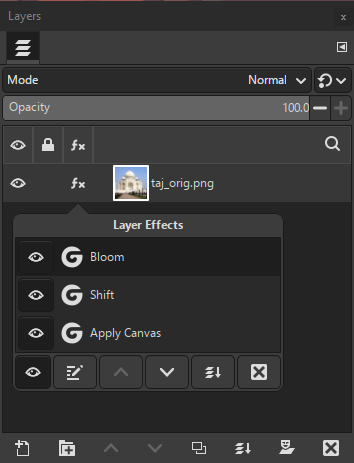

A layer effect is a filter that you can tweak at any time, that doesn't permanently affect a layer. It is rendered on top of the actual layer, which means the actual contents of the layer itself stay unchanged.
The advantage is that you can still go back and tweak the layer effect, even after doing other operations in between. Unlike Undo, where you might need to Undo and Redo many operations.
Layer effects are also saved in your XCF image, so they can still be tweaked after saving and reopening your image.
You add a layer effect just like other filters, by selecting a layer and then choosing a command (a menu item or keyboard shortcut.)
A layer effect is a class of filters. You may not know whether a command
creates a layer effect until you activate the command and see the
 icon in the Layers dialog.
icon in the Layers dialog.
When starting a filter that can be used as a layer effect, the Filter dialog will have a Merge Filter checkbox.
Most GEGL filters can be layer effects. GEGL is the image processing library used by GIMP. No other types of filters or plug-ins can be layer effects.
Layer effects only apply to a single layer, while other filters may apply to channels, layers, or entire images.
You can't choose whether a filter can be used as a layer effect. But you can choose to use a filter that can be a layer effect in a non-tweakable way: see Merging.
Having a lot of layer effects in your image can impact performance. Some filters take longer to compute and affect performance more than others. Layer effects need to be re-rendered any time something in the layer stack that affects it changes. If you experience slowdowns, you might want to consider merging some of your effects with the layer.
GIMP represents layer effects with an icon:
 .
This icon appears in the Layers
Dialog, in the row of the layer the layer effect applies to.
Only layers that have at least one layer effect will show this icon.
.
This icon appears in the Layers
Dialog, in the row of the layer the layer effect applies to.
Only layers that have at least one layer effect will show this icon.
The term fx used on the icon is an abbreviation for effects.
Using layer effects is a form of “non-destructive editing”, often shortened as “NDE”. Which means they don't permanently change the layer they are applied to.
Layer effects have settings which you can change at a later time. Changing any of these settings immediately updates their effect onto their layer and the entire image.
While all filters have an effect on layers, in the sense of a result, here we intend the words “layer effect” to mean the specific use of eligible filters.
You create a layer effect by selecting a layer, then choosing a command
that starts a filter that can be a layer effect.
As soon as the filter dialog opens, the
 icon appears next to the layer name in the
Layers dialog.
icon appears next to the layer name in the
Layers dialog.
A layer effect belongs to a layer. A layer can have multiple layer effects. When you add a layer effect, it is added above any already existing layer effects for that layer. You can later move it, using the Layer Effects dialog.
Adding a layer effect can be undone using the Undo command.
The order of layer effects matters. The layer effects of a layer are rendered from the bottom up. After taking the pixels of the layer, the first effect rendered is the bottom-most one in the effect list, followed by each effect above it. This means that the layer effects below, affect the output of a layer effect.
You can rearrange the order of layer effects on a layer by choosing a
layer effect and then clicking the
 Up or
Up or
 Down buttons in the
Layer Effects
dialog.
Down buttons in the
Layer Effects
dialog.
Some changes in order might appear invisible, it depends on the actual layer effects and their parameters. Reordering layer effects can be undone.
Figure 8.73. Layer Effects Dialog

An example of the Layer Effects pop-up dialog inside the Layers dialog, showing three layer effects applied to the layer
Use this dialog to edit, reorder, remove, or change the visibility of layer effects. You can also use this dialog to merge down all effects on a layer. Any change made here immediately updates the image.
You open this dialog by clicking on the
 icon shown next to the layer name in the Layers dialog.
icon shown next to the layer name in the Layers dialog.
Click on a row in the Layer Effects dialog to select the effect. Only one layer effect can be selected.
Click the
 Edit Layer Effects button after you select an effect, to open the
filter dialog. You can then change the filter settings as desired.
Any changes will be immediately shown on your image.
Edit Layer Effects button after you select an effect, to open the
filter dialog. You can then change the filter settings as desired.
Any changes will be immediately shown on your image.
To accept your changes to the layer effect, click , or choose if you want to keep your previous settings.
Click the
 Remove Layer Effects button after you select the effect.
The layer effect will disappear from the dialog. When it is the last
effect on the layer, the dialog will also close.
Remove Layer Effects button after you select the effect.
The layer effect will disappear from the dialog. When it is the last
effect on the layer, the dialog will also close.
If you want to move a layer effect up or down, click the
 Up or
Up or
 Down buttons.
The layer effect position will be changed and the effects on the
image updated.
Down buttons.
The layer effect position will be changed and the effects on the
image updated.
Click the
 Visibility button next to a layer effect to show or hide the visibility
of the effect on the layer. You can also show or hide all layer effects
by clicking the button at the bottom of the dialog.
Visibility button next to a layer effect to show or hide the visibility
of the effect on the layer. You can also show or hide all layer effects
by clicking the button at the bottom of the dialog.
Click the Merge Down button to merge all layer effects with the layer itself. All the layer effects will disappear and the dialog will close.
You will not be able to make further changes to the layer effects, unless you Undo the merge. To undo and restore the layer effects, choose the “Undo Rasterize filters” item from the Edit menu.
When you choose a command that can be used as a layer effect, you can choose to use the filter in a non-tweakable way. This is called “merging”, similar to the way you merge layers.
When you do not want to use a filter as a layer effect, enable the Merge Filter checkbox in the filter's dialog. Then, after choosing , the results of the filter will be merged with the layer.
You can still Undo what you did, or do it again with different choices. But it won't appear in the stack of layer effects, and if you subsequently do other operations, it will be harder to undo. After saving you won't be able to undo at all, because the undo actions are removed after saving.
Some filters take two images, the active image and another so-called “auxiliary” image, which you must separately choose in the filter's dialog. Examples of these auxiliary images are a “bump map” or a “mask”.
Such a filter's dialog will have the Merge Filter checkbox checked and disabled. This means that the filter can't be used as a layer effect at this time.
You can undo adding or removing a layer effect. Even changing the settings of a layer effect shows up in the undo history and thus can be undone.
At this time, it is not possible to copy a layer effect and add it to a different layer. To work around that, you can save the layer effect settings in a preset, the same as for other filters. See Filter Presets.
Layer effects are saved when you save an image in GIMP's native XCF format. All the presets for a layer effect are also saved.
Layer effects are “merged” when you export an image to another format. Even when you export to formats which also support layer effects, such as the PSD format.